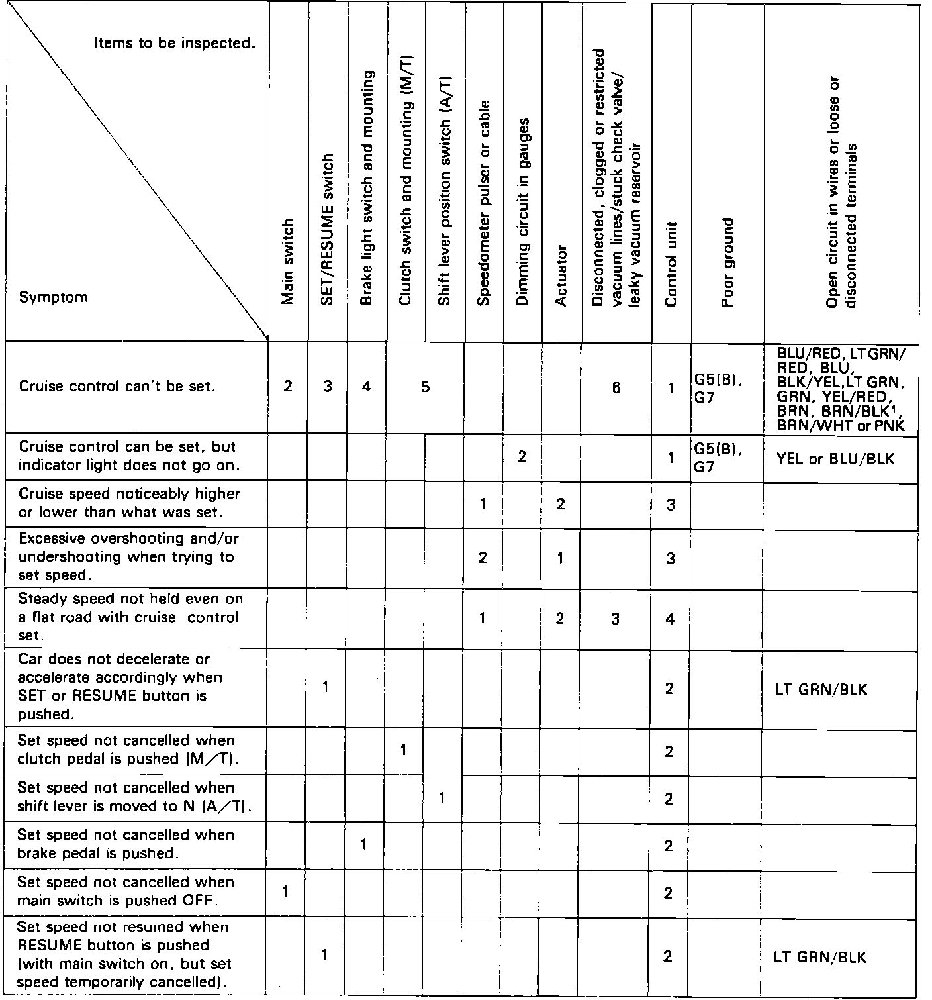
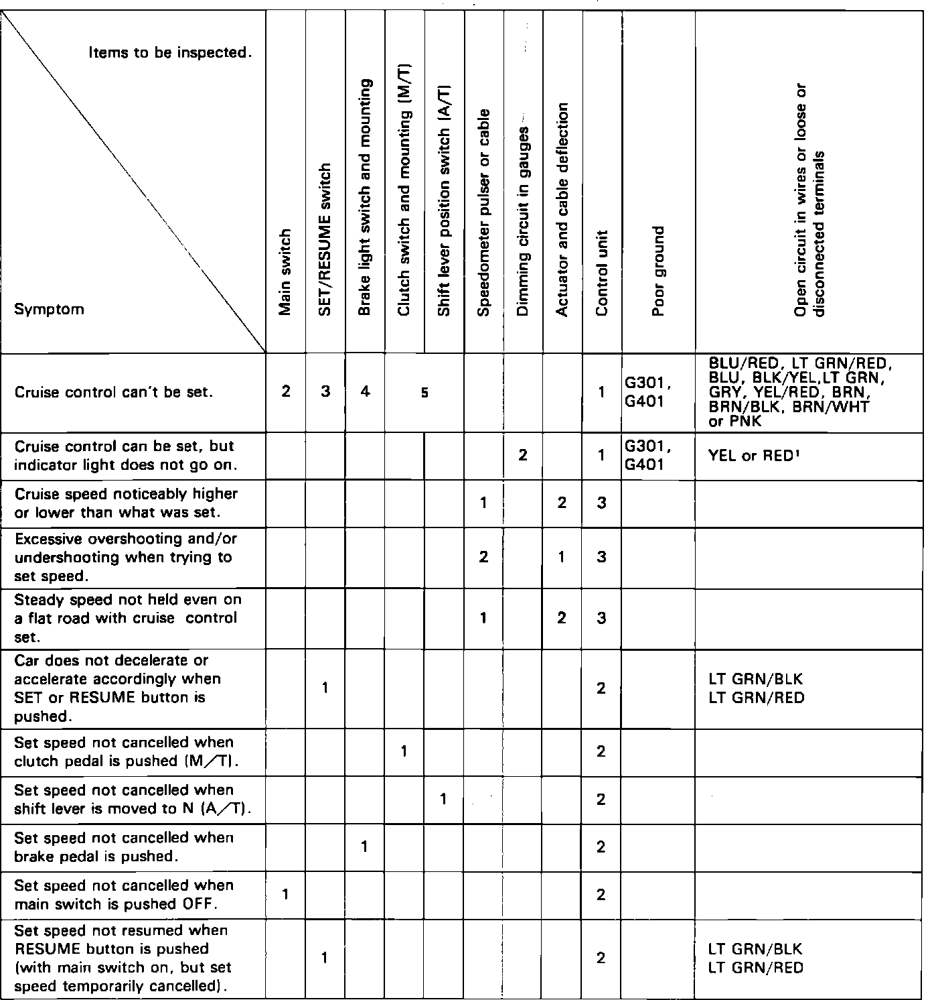

Cruise Control: Testing and Inspection
Fig. 2 Troubleshooting Chart:

Fig. 3 Troubleshooting Chart:

Refer to Figs. 2 and 3, using numbers in the table following symptoms, as sequence with which fuse or unit may be at fault.
Before troubleshooting, check fuses 3, 4 and 9 in fuse panel, then sound the horn and check tachometer for proper operation.